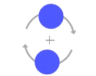

Introduction
As touch screens become more and more ubiquitous, we need tools that allow users to teach and learn any software on a touchscreen device.
Look at the gif below on the left. This is what Android Screencast captures. Can you tell what gestures the user is performing just by following the white dots indicating where the user is touching?
Now look at the gif on the right. This is what our GestureMap captures. Can you tell what gesture the user is performing now? Which tool showed a more intuitive animation?
Screencast |
GestureMap |
How would you teach a group of people to learn a software tool on a computer?
Imagine you want to teach a classroom of students to use a software tool on a computer. With mouse-input interfaces, teaching software tools via a projection of the computer screen is easy and effective because students can follow the teacher's cursor on the screen. The cursor position tells nearly the whole story, and the teacher can quickly and simply communicate any other details of the gesture, such as "right-click" or "click and hold".
But how do we teach people to learn a software tool on a touch interface?
Touch gestures are much more complex than the mouse-input interface of a computer. Multitouch and different combinations of touches produce different results. It is harder to teach touch interfaces in the classroom environment because a projection of the touch points does not give a good understanding of complex gestures.
Actual Gestures |
Screencast |
Screencast leaves much to be desired!
Introducing GestureMap
Why is it important to develop tools to help teach software on a touch interface?
People use touch interfaces for more than just games on their phones. For example, Adobe's new mobile products enable artists to produce professional work from their touch devices.
In addition, more and more people are using touch devices. Elementary school teachers need to show their students how to complete tablet-based activities, and college students around the world need to debug their grandparents' iPads over the phone.
We have developed intuitive animations that can be used to teach touch interfaces.
For example, when the teacher swipes the touch screen, our swipe animation appears on the projector, and students can easily follow along.
Gestures
A circle indicates where the fingers touch the screen. Increasingly complex gestures are communicated by combining simple building blocks, including arrows and rings.
TapThe most basic gesture in a touch screen user's toolbox. GestureMap models Tap with a dot that appears and then vanishes. |
Double TapMultiple taps form a single gesture if they are close enough together. To visualize Double Tap, two Taps are strung together, and each is annotated with its number in the tap sequence. |
||
SwipeA position marker moves in the direction of your swipe with arrows indcating the swipe path. The arrows fade as the user completes the gesture. |
DragDragging is swiping+selection. A frame, shown here as a ring, outlines the item that is being dragged. |
||
Zoom InThe dots show the initial touch points of the two fingers, while arrows show the direction of the pinch. The arrows fade as the user completes the gesture. |
Zoom OutSimilar to Zoom In, Zoom Out shows the initial touch points with arrows demonstrating the direction of the pinch. The arrows fade as the user completes the gesture. |
||
Press And HoldRipples indicate that the user is holding the touch. |
RotateTwo dots denoting your two touch points appear. Arrows denoting the direction of rotation appear as you begin to rotate around the center. |
 |
Before and After
We can now visualize complex gestures using a traditional screencast (left column) and GestureMap (right column).
Tap
Double Tap
Swipe

Drag

Zoom In
Zoom Out
Press and hold
Rotate